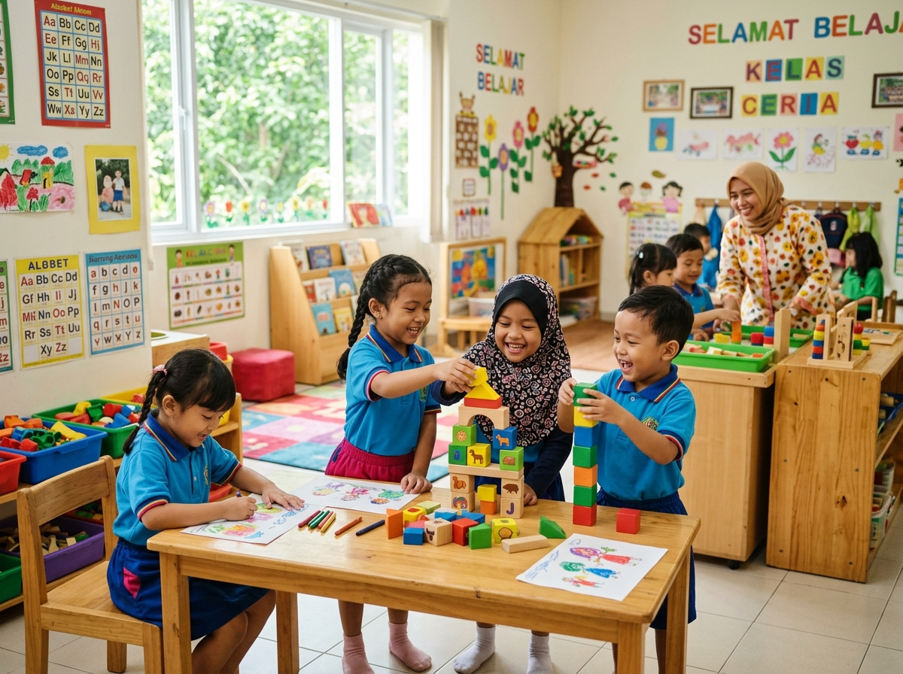

TK Harapan Bangsa Karawang
Memfasilitasi pembentukan kemandirian, sosialisasi, budi pekerti, serta eksplorasi motorik dan sensorik dalam suasana belajar yang ceria, aman, dan penuh kasih sayang bagi masa keemasan buah hati.

Pendekatan Edukasi Ramah Anak
Kurikulum TK Harapan Bangsa dirancang khusus untuk memicu keingintahuan alami anak, menumbuhkan adab santun, dan melatih kemandirian tanpa membebani psikologis peserta didik.
Bermain Sambil Belajar
Konsep pembelajaran tematik kontekstual di mana setiap permainan memiliki tujuan edukatif terukur, melatih sensorik, motorik halus, dan koordinasi fisik.
Pembiasaan Karakter Kasih
Penanaman tata krama, empati berbagi dengan teman sebaya, mengucapkan salam, doa sebelum dan sesudah kegiatan, serta kedisiplinan merapikan mainan sendiri.
Literasi & Numerasi Menyenangkan
Pengenalan huruf, bunyi fonetik, bentuk warna, dan bilangan melalui dongeng interaktif, lagu edukatif, serta media balok raba yang menyenangkan.
Program Unggulan TK Harapan Bangsa
Rangkaian kegiatan harian dan berkala yang membekali putra-putri Anda siap melanjutkan ke jenjang Sekolah Dasar dengan percaya diri.
Pembiasaan Adab & Kemandirian Sejak Dini
Membimbing anak makan sendiri, memakai sepatu, mencuci tangan tertib, serta berani mengungkapkan perasaan secara sopan.
Stimulasi Motorik Halus & Kasar
Meremas lilin playdough, menggunting kertas aman, mewarnai pola, serta senam ceria di ruang terbuka.
Aktivitas Seni Rupa, Musik & Gerak
Mengekspresikan imajinasi melalui lukisan jari (finger painting), kolase bahan alam, dan bermain alat musik perkusi sederhana.
Area Bermain Aman & Higienis
Fasilitas permainan edukatif outdoor dan indoor yang bersih dengan pengawasan guru secara intensif.
Kegiatan Pengenalan Lingkungan & Profesi
Kunjungan edukatif tematik sederhana untuk mengenali profesi sosial, tanaman, dan rasa cinta pada alam sekitar.
Kemitraan Guru & Orang Tua Berkala
Buku penghubung harian dan forum konsultasi berkala untuk memantau tumbuh kembang dan perilaku anak secara terarah.